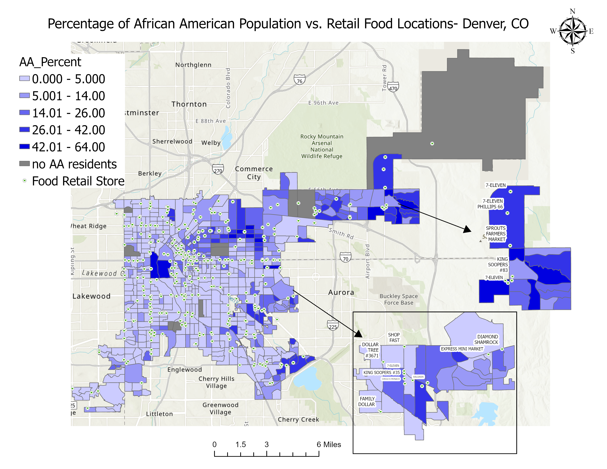
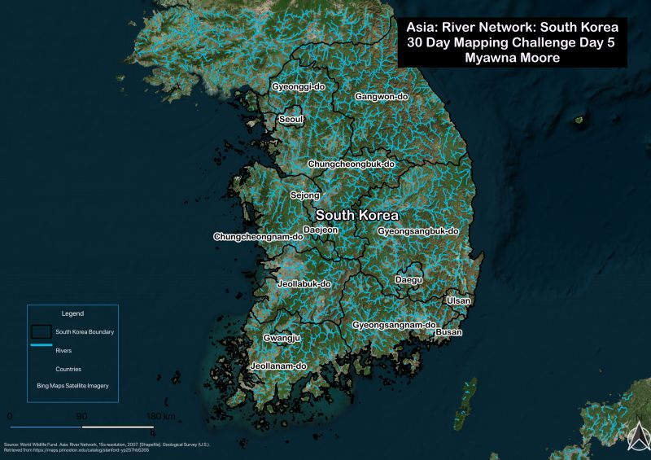
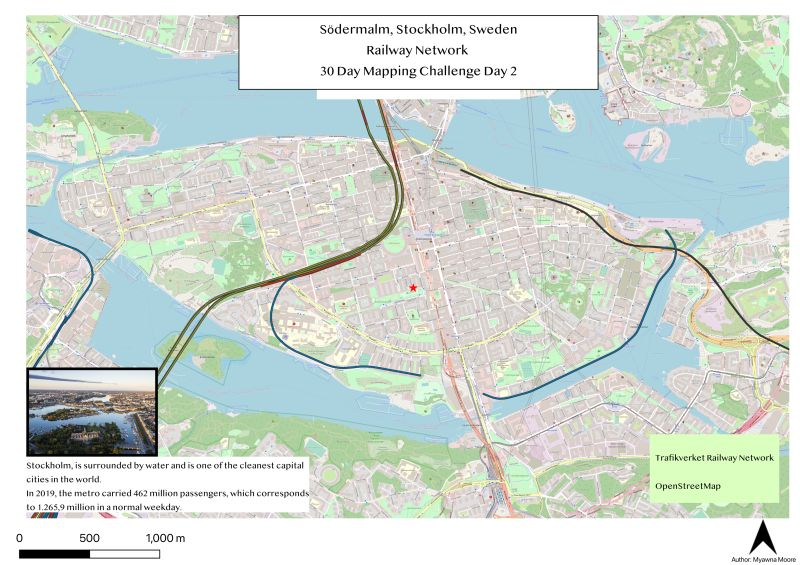

Mya Moore
GIS Analyst | Hazard & Climate Risk | Environmental Justice
Hi, I’m Mya Moore, a GIS analyst and geography graduate student focused on hazard vulnerability, climate risk, and environmental justice. I specialize in using Geographic Information Systems (GIS), spatial analysis, and geospatial database design to examine how environmental conditions shape community risk and resilience.
My work focuses on natural hazards, internal displacement, disaster vulnerability, and public health geography, with particular interest in how climate change disproportionately impacts vulnerable populations. I use ArcGIS Pro, ArcGIS Online, QGIS, SQL, and LiDAR analysis to support data-driven decision making and identify patterns that inform planning, adaptation, and mitigation strategies.
My goal is to apply GIS to real-world challenges in hazard assessment, emergency response, resilience planning, and environmental justice by producing meaningful spatial analysis that supports both people and place.
Master's Thesis Research: Climate Displacement Vulnerability and Environmental Justice
Climate Displacement Dashboard: Hazard Risk, Social Vulnerability, and Displacement Indicators
This project represents my master's thesis research and more than two years of work focused on climate displacement vulnerability, hazard exposure, and environmental justice. The goal is to evaluate how natural hazards, social vulnerability, and displacement indicators intersect to identify communities at greatest risk of climate-driven displacement.
The research combines GIS spatial analysis, geodatabase design, hazard mapping, regression analysis, demographic vulnerability assessment, and environmental justice frameworks to better understand where displacement pressures are highest and why certain populations face disproportionate risk.
This dashboard serves as the primary visualization platform for the project, integrating displacement indicators, natural hazard exposure, and social vulnerability metrics to support resilience planning, adaptation strategy development, and equitable hazard mitigation decision-making.
Featured Projects
Climate Displacement Risk Mapping: Internal Displacement from Natural Hazards (2023)
This project analyzes internal displacement caused by natural hazards across the United States using the Internal Displacement Monitoring Centre (IDMC) 2023 displacement dataset. The goal was to identify spatial patterns of climate-related displacement and examine how natural hazards contribute to population vulnerability and forced movement.
The project involved building a geospatial database using PostgreSQL and pgAdmin, writing SQL queries for database design, data cleaning, and spatial organization, and integrating the results into ArcGIS for visualization and analysis.
The final web map highlights areas with the highest displacement totals and supports broader hazard vulnerability assessment, climate adaptation planning, and environmental justice research.
LiDAR-Based Landslide Susceptibility Assessment: Mercer Island, Washington

This project used LiDAR-derived elevation models to assess landslide susceptibility along Mercer Island, Washington, with a focus on coastal slopes and the I-90 highway corridor. The analysis used DEM reclassification, slope modeling, hillshade interpretation, and comparison with known landslide records to identify areas of elevated risk.
Lighter slope values, terrain depressions, and visible surface cracks helped identify potential failure zones where landslides are more likely to occur. These patterns were compared against existing municipal landslide risk datasets to strengthen interpretation and spatial validation.
The final result supports hazard mitigation planning by identifying vulnerable infrastructure corridors and high-risk terrain requiring monitoring and resilience planning.
Environmental Justice Analysis: Food Access in Denver

This project used ArcGIS Pro to identify food deserts affecting predominantly African American communities in Denver, Colorado. Using 2021 ACS Census block group data, TIGER/Line boundaries, and spatial analysis techniques, the project examined patterns of food access, demographic vulnerability, and neighborhood inequity.
The analysis focused on identifying underserved areas where access to healthy food options is limited and where racial and socioeconomic disparities intersect. The final map highlights areas of spatial inequity and demonstrates how GIS can support equitable planning and public health decision-making.
Hazard Gentrification and Environmental Justice: Redlining, Demographic Change, and Natural Hazard Risk in Seattle
Featured Research Map

This project examined how historical redlining continues to shape present-day environmental justice, demographic vulnerability, and hazard exposure in Seattle, Washington. The research focused on whether historically redlined neighborhoods spatially align with race, income, education, and natural hazard risk, and whether these same areas are experiencing signs of hazard gentrification.
Using American Community Survey demographic data, Mapping Inequality HOLC redlining shapefiles, and Seattle natural hazard risk data from the Modeled Seattle Hazard Explorer, I evaluated how low-income and minority populations are distributed across high-risk hazard zones and how demographic shifts suggest displacement pressures in vulnerable communities.
Additional Mapping Projects
30 Day Mapping Challenge: South Korea River Network

Stockholm Rail Network

Myawna (Mya) Moore
Denver, Colorado | myammoore14@gmail.com
LinkedIn: linkedin.com/in/myawna-moore
Education
Master of Arts in Geography | Expected June 2026
B.A. Geography, Minor in Marketing
Professional Experience
Graduate Teaching Assistant | September 2024 – Present
GIS Mapping Specialist | May 2023 – August 2024
Spatial analysis, dashboard development, and geodatabase support for graduate research projects
Core Skills
ArcGIS Pro, ArcGIS Online, QGIS, SQL, PostgreSQL, Spatial Analysis, LiDAR Processing, Hazard Mapping, Environmental Justice Analysis, Geodatabase Design, Cartography, Spatial Statistics, Dashboard Development, GIS Research Support
Download Resume
Contact
Thank you for visiting my portfolio. Please feel free to connect for GIS opportunities, research collaboration, or professional networking.